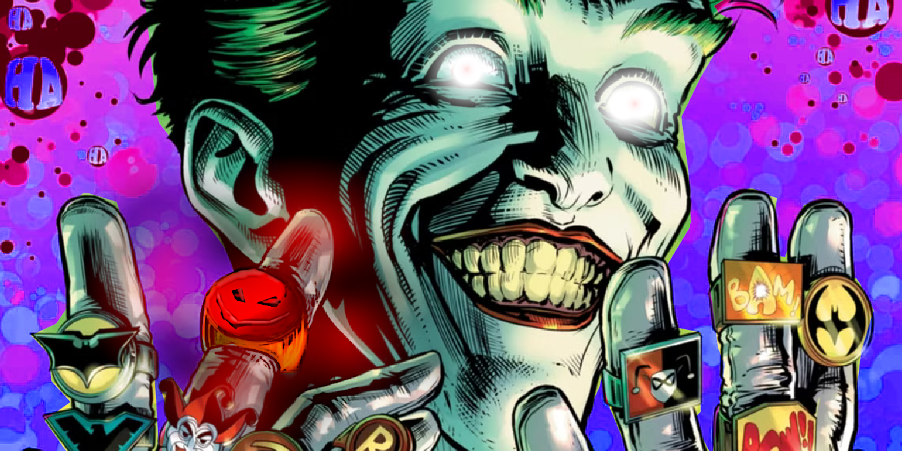
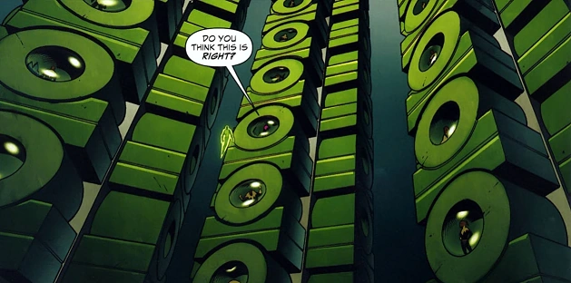
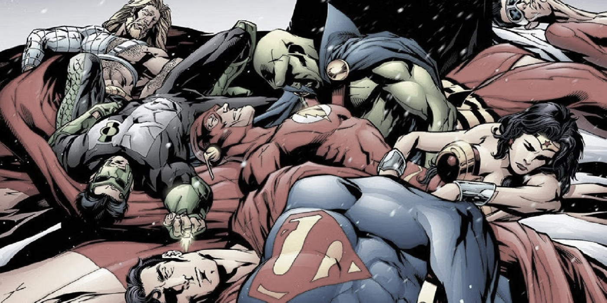
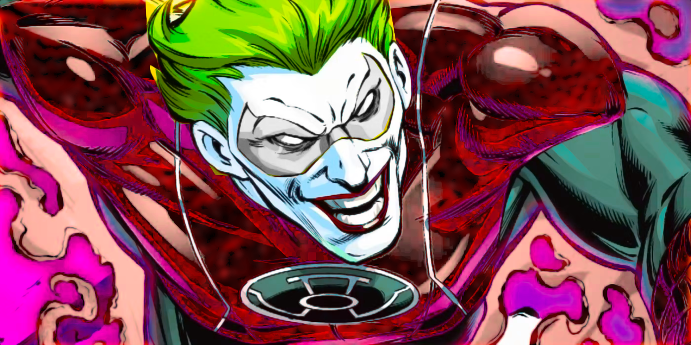

Chaos Call
A Green Lantern and Batman Story
Disclaimer
This is a fan-made work created purely for entertainment and as a respectful homage to the original material. It is not affiliated with or endorsed by any official entities associated with the characters or settings featured.
This work is non-commercial and created with the utmost respect for the original creators. Its purpose is to celebrate and explore the inspiring worlds and stories that have captured the imagination of fans everywhere.
Thank you for understanding and supporting creative expression!

Chapter 1: A Proposal for Justice
The Joker’s laughter echoed across the scorched remains of Gotham’s East End, a macabre melody to the despair surrounding him. Batman stood silently, fists clenched, staring at the chaos his greatest adversary had once again wrought. Smoke curled around him, the acrid scent of burning rubble filling the air.
“Ah, Batsy,” Joker rasped, blood trickling from the corner of his mouth as he grinned up from where he was pinned against the ground. “Did you miss me?”
Bruce didn’t answer. He only tightened the Batcuffs around the Joker’s wrists, dragging him toward the Batmobile. The sirens of approaching GCPD cars cut through the silence.
“Another masterpiece, Joker?” Commissioner Gordon asked wearily as he stepped out of his cruiser, his face lined with exhaustion.
“Masterpiece? Oh, Jimbo, I’m just warming up!” Joker cackled.
“Save it,” Batman growled, shoving him toward a waiting police van. “It ends here.”
But even as he said it, Bruce knew it wouldn’t. The Joker always escaped. Always. And Gotham always paid the price.
It was hours later, in the Batcave, that the conversation took a turn.
“You know he’ll escape again,” Alfred said, his voice calm but firm. He set a tray of tea beside Bruce, who was sitting before a screen of crime scene photos. “And next time, Master Wayne, the cost may be far greater.”
Batman’s reply was cut short by the sound of a voice echoing through the cave.
“Then maybe it’s time to try something new,” Hal Jordan said, descending in a cascade of green light.
Bruce didn’t turn. “What are you doing here, Jordan?”
“Offering a solution.” Hal landed softly, his Green Lantern suit glinting in the dim light. “You’ve got the most dangerous criminal on the planet locked up in Arkham. And we both know that’s not working. Let me take him to Oa.”
Batman turned, his eyes narrowing. “Oa?”
Hal nodded. “The Lantern Corps’ prison facilities are lightyears beyond anything on Earth. If anyone can keep the Joker locked up for good, it’s us.”
Bruce was silent for a long moment.
“And what happens when the Joker corrupts your Corps?” he asked finally. “He doesn’t just break out—he breaks people.”
“Then he’ll learn that the Green Lantern Corps doesn’t bend,” Hal said firmly. “This is the best option you’ve got, Bruce.”
Alfred stepped forward. “With respect, sir, it may be worth considering. How many lives have been lost because Arkham cannot hold him?”
Bruce closed his eyes. The images of Gotham’s destruction played on repeat in his mind. Finally, he stood.
“Fine,” he said. “But if this fails, the blood will be on your hands, Hal.”
Chapter 2: The Prisoner of Oa
The Joker was silent as he was transported across the stars, his green prison construct shimmering around him. But Hal couldn’t shake the feeling that the silence wasn’t a sign of defeat.
“This place smells boring,” the Joker said suddenly, his grin splitting his face. “I can’t wait to liven it up.”
Hal ignored him, guiding the construct through the shimmering green skies of Oa. As they landed, Kilowog was waiting, his massive frame blocking the entrance to the Lantern Corps’ prison.
“This the guy?” Kilowog asked, looking down at the Joker with a mix of disgust and curiosity.
“Yeah,” Hal said. “Keep him in the highest security cell you’ve got.”
As the Joker was led inside, his eyes flickered around the towering green spires of Oa. “Oh, this is fancy,” he murmured. “What’s down below?”
“No one’s going to tell you,” Hal snapped.
But as the Joker was dragged away, his gaze lingered on the faint glow he thought he’d seen beneath the surface.
Chapter 3: Whispers of Chaos
Oa’s prison was silent, save for the soft hum of the energy fields keeping its inmates contained. But deep beneath the surface, something stirred.
The Joker leaned against the wall of his cell, his fingers tapping an uneven rhythm.
“Hello?” he said suddenly, cocking his head. “Is someone there?”
For a moment, there was nothing. Then, faintly, he heard it—a whisper, low and guttural, speaking in a language he didn’t understand.
The Joker’s grin widened. “Oh, now this is interesting.”
The glow beneath the planet’s surface grew stronger, pulsating in shades of red and black. It called to him, its chaotic energy resonating with something deep within his soul.
“Who are you?” he whispered, his voice dripping with curiosity.
The voice answered, its meaning slipping into his mind like a blade through flesh.
Chaos. Rage. Death.
Chapter 4: The Chaos Ring
Kilowog was the first to notice the change. “Something’s wrong,” he muttered to Hal. “The energy fields are fluctuating.”
Hal frowned. “What kind of fluctuation?”
Kilowog hesitated. “It’s coming from the old vaults. The ones we sealed centuries ago.”
Hal’s eyes widened. “That’s impossible. Nothing’s supposed to—”
A deafening crack interrupted him.
Deep within the prison, the Joker stood, his hand outstretched as a red-and-black ring hovered before him. It pulsed with power, its energy wrapping around him like a shroud.
The voice spoke again, louder this time. You are the one. Chaos incarnate. Take the ring and let the universe burn.
The Joker’s laughter echoed through the halls, louder and more unhinged than ever.
“Oh, Batsy,” he whispered, slipping the ring onto his finger. “Wait till you see what I do with this.”
Chapter 5: Chaos Unbound
The battlefield lay in ruins, a stark reminder of the Justice League’s failure. The air was thick with ash, and the eerie red glow of the Chaos Ring cast long shadows over the rubble. Superman’s battered form lay motionless beneath a crumbled pillar. Wonder Woman’s lasso hung slack in her hand, her breathing shallow. The Flash, slowed to a crawl, could barely move.
At the center of it all stood the Joker, a silhouette against the crimson sky, the Chaos Ring’s light pulsating on his finger. Energy crackled and surged around him, warping the very fabric of reality. He laughed—a deep, guttural laugh that reverberated like thunder.
Batman, broken but not beaten, pushed himself up from the ground, his cape torn and smeared with dirt. His cowl was cracked, revealing part of his bloodied face, but his eyes burned with determination as he stared down his eternal foe.
The Joker noticed him, his laughter softening into a low chuckle.
“Well, look who’s still kicking,” he said, his tone mockingly affectionate. “Good ol’ Bat-brains. Always the last one standing, aren’t ya?”
Batman glared. “It’s over, Joker. You’ve won. You have the power to destroy everything, to rule everything. So why are you still talking to me?”
chapter 6: The Punchline
The Joker tilted his head, considering the question like it was the setup to a punchline only he understood. His grin widened.
“Power?” he repeated, drawing the word out as if tasting it. “What in the world made you think I was seeking that? Sure, it’s fun for a while. All the explosions, the screaming, the big kabooms!” He mimed an explosion with his hands, cackling. “But that much power? It gets boring real quick.”
He held up the Chaos Ring, its glow flickering in his palm. “This thing, this shiny little trinket—it has purpose. Entropy, Batsy. You know what that is, don’t you? The slow, inevitable march toward disorder.” His voice dropped, taking on a strange sincerity. “I’ve been called an agent of chaos before, but do you know what I really am?”
Batman said nothing, his gaze locked on the ring.
“I’m not defined by chaos,” the Joker continued, his voice rising, his arms spreading wide. “I’m not restrained by it. I don’t need it. The best jokes, Bats—the best ones—are the ones you don’t see coming.”
With that, he grabbed the ring with two fingers and yanked it off his hand. The crimson glow sputtered and dimmed, the world around them growing unnaturally quiet.
The Joker turned the ring over in his hand, studying it like it was an old toy he’d outgrown. Then, with a flick of his wrist, he tossed it at Batman’s feet.
“What would this thing get me, huh?” he asked, his voice sharp now, cutting through the silence. “What if I kept it? What if I kept going? I’d be in charge. I’d be in command. I’d have absolute control.”
He spat the last word, his expression twisting into mock disgust. “Control. Is that what you think I want? You think I seek that? Really? Does that sound funny to you? You think that makes me laugh?”
The Joker’s grin faded for a moment, replaced by something colder, more dangerous. Then, just as quickly, the manic glee returned.
“Nooo!” he shouted, throwing his hands into the air, his laughter echoing through the ruins. “Had my fun, though! Oh, what a ride! Me, with absolute power—that was such a good setup.” He turned to Batman, his eyes gleaming. “And here’s the punchline, Batsy.”
He leaned in close, his voice dropping to a conspiratorial whisper.
“I don’t care.”
The Joker straightened up, brushing imaginary dust off his coat. “So, you go ahead and pick up that little bauble, do your whole broody hero thing. Me?” He stretched and yawned theatrically. “I’ll be back in my cell at Arkham. Had a long day, y’know?”
With a casual wave, the Joker turned and strolled away from the battlefield, whistling a jaunty tune.
Batman stared after him, then at the Chaos Ring lying inert at his feet. The Justice League began to stir, their groans of pain breaking the heavy silence.
Superman limped over, his voice rough. “He just... gave it up?”
Batman didn’t answer immediately. His gaze remained fixed on the Joker’s retreating figure.
“He doesn’t want power,” Batman said finally, his voice low. “He wants the world to never see the punchline coming.”
As the Joker’s laughter faded into the distance, the ring pulsed faintly, its glow now a muted ember of the chaos it once promised.